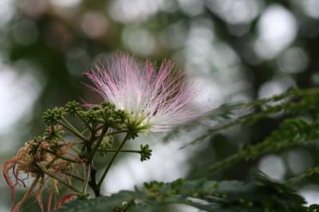

<xmp style='background-color:black;color:white;width:400'>
자귀나무(소찰밥나무)
    짙은 녹색의 잎과 연분홍 꽃이
    부채꼴 모양으로 펼쳐 진 자귀나무
    꽃이 꽃술 모양으로
    여름철에 화려하게 핀다.
    붉은 실타래를 풀어놓은 듯한 꽃과
    저녁마다 서로 맞붙어 잠을 자는 잎이
    매우 인상적인 나무다.

    두 잎을 맞대고 밤을 보내는
    이 특성 때문에 합환목
    밤에 잎이 합한다고 야합수로 불린다.
    소들이 잎을 너무 잘 먹어
    소찰밥나무라고도 한다.
    자귀나무는 꽃색이 붉고
    낮에는 잎이 서로 떨어져 있다가
    밤이 되면 마주한 두 장의 잎이
    짝을 이루어 붙어 있는 모습이
    귀신같다고 해서 자귀나무란
    이름이 붙었다고 한다.

    신기하게도 꼭 두장 씩만 붙는다.
    일본에서는 잠자는 나무로
    영어이름은 꽃잎이 연분홍으로
    물들어 있어 비단나무(Silk tree)라고 부른다.
                                        
    우리나라에서 자생하는 나무인데
    꽃 모양이 특이해 외래종이라 착각하기도 한다.

    꽃은 가지 끝에 수십 개의
    두상 꽃차례가 송이모양으로 달린다.
    분홍색의 긴 수술이
    여러 개 우산모양으로 펼쳐진다.
    한가지 끝에 수꽃과 암꽃이 함께 달리는데
    가는 수술 같은 것이 수꽃의 수술이고
    암꽃은 좀 작은 것을 찾으면 된다.
</xmp>